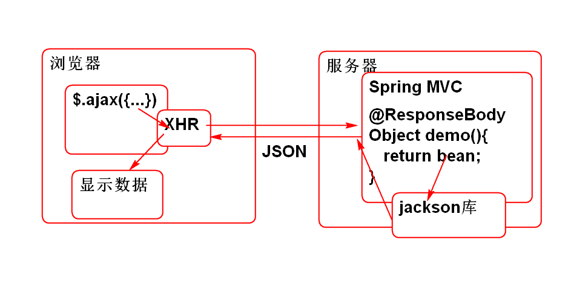

Spring MVC 提供了 Ajax支持:

必须导入 jackson API
<dependency>
<groupId>com.fasterxml.jackson.core</groupId>
<artifactId>jackson-annotations</artifactId>
<version>2.2.3</version>
</dependency>
<dependency>
<groupId>com.fasterxml.jackson.core</groupId>
<artifactId>jackson-core</artifactId>
<version>2.2.3</version>
</dependency>
<dependency>
<groupId>com.fasterxml.jackson.core</groupId>
<artifactId>jackson-databind</artifactId>
<version>2.2.3</version>
</dependency>
在控制器方法上使用 @ResponseBody 注解, 就可以自动的将控制器的返回值(JavaBean)转换为JSON发送到客户端.
案例:
导入Spring MVC 和 jackson
<dependency>
<groupId>org.springframework</groupId>
<artifactId>spring-webmvc</artifactId>
<version>3.2.8.RELEASE</version>
</dependency>
<dependency>
<groupId>com.fasterxml.jackson.core</groupId>
<artifactId>jackson-annotations</artifactId>
<version>2.2.3</version>
</dependency>
<dependency>
<groupId>com.fasterxml.jackson.core</groupId>
<artifactId>jackson-core</artifactId>
<version>2.2.3</version>
</dependency>
<dependency>
<groupId>com.fasterxml.jackson.core</groupId>
<artifactId>jackson-databind</artifactId>
<version>2.2.3</version>
</dependency>
配置Spring MVC: web.xml
<servlet>
<display-name>DispatcherServlet</display-name>
<servlet-name>DispatcherServlet</servlet-name>
<servlet-class>org.springframework.web.servlet.DispatcherServlet</servlet-class>
<init-param>
<description></description>
<param-name>contextConfigLocation</param-name>
<param-value>classpath:spring-*.xml</param-value>
</init-param>
<load-on-startup>1</load-on-startup>
</servlet>
<servlet-mapping>
<servlet-name>DispatcherServlet</servlet-name>
<url-pattern>*.do</url-pattern>
</servlet-mapping>
添加Spring 配置文件: resource
<?xml version="1.0" encoding="UTF-8"?>
<beans xmlns="http://www.springframework.org/schema/beans"
xmlns:xsi="http://www.w3.org/2001/XMLSchema-instance"
xmlns:context="http://www.springframework.org/schema/context"
xmlns:jdbc="http://www.springframework.org/schema/jdbc"
xmlns:jee="http://www.springframework.org/schema/jee"
xmlns:tx="http://www.springframework.org/schema/tx"
xmlns:aop="http://www.springframework.org/schema/aop"
xmlns:mvc="http://www.springframework.org/schema/mvc"
xmlns:util="http://www.springframework.org/schema/util"
xmlns:jpa="http://www.springframework.org/schema/data/jpa"
xsi:schemaLocation="
http://www.springframework.org/schema/beans http://www.springframework.org/schema/beans/spring-beans-3.2.xsd
http://www.springframework.org/schema/context http://www.springframework.org/schema/context/spring-context-3.2.xsd
http://www.springframework.org/schema/jdbc http://www.springframework.org/schema/jdbc/spring-jdbc-3.2.xsd
http://www.springframework.org/schema/jee http://www.springframework.org/schema/jee/spring-jee-3.2.xsd
http://www.springframework.org/schema/tx http://www.springframework.org/schema/tx/spring-tx-3.2.xsd
http://www.springframework.org/schema/data/jpa http://www.springframework.org/schema/data/jpa/spring-jpa-1.3.xsd
http://www.springframework.org/schema/aop http://www.springframework.org/schema/aop/spring-aop-3.2.xsd
http://www.springframework.org/schema/mvc http://www.springframework.org/schema/mvc/spring-mvc-3.2.xsd
http://www.springframework.org/schema/util http://www.springframework.org/schema/util/spring-util-3.2.xsd">
<!-- 配置组件扫描 -->
<context:component-scan
base-package="controller"/>
<!-- 配置MVC注解扫描 -->
<mvc:annotation-driven />
</beans>
测试 ...
添加控制器:
@Controller
@RequestMapping("/demo")
public class DemoController {
@RequestMapping("/ary.do")
@ResponseBody
//ResponseBody会自动的将返回结果中JavaBean转换
//为JSON字符串发送到浏览器客户端, 底层用了
// Jackson API
public Object test(){
String[] ary = {"李洪鹤","熊二","熊大"};
return ary;
}
@RequestMapping("/bean.do")
@ResponseBody
//将JavaBean作为返回值,ResponseBody注解将Bean
//转换为 Json 字符串发送到浏览器端
public Object bean(){
return new Foo(8,"Tom", 34.6);
}
@RequestMapping("/list.do")
@ResponseBody
public Object list(){
List<Foo> list = new ArrayList<Foo>();
list.add(new Foo(1, "Tom", 3.4));
list.add(new Foo(2, "Jerry", 3.4));
list.add(new Foo(3, "Andy", 3.5));
list.add(new Foo(4, "Wang", 3.2));
return list;
}
@RequestMapping("/map.do")
@ResponseBody
public Object map(){
Map<String, Object> map =
new LinkedHashMap<String, Object>();
map.put("age", 20);
map.put("name", "Andy");
map.put("price", 123.6);
return map;
}
@RequestMapping("/list2.do")
@ResponseBody
public Object list2(){
List<String> list =
new ArrayList<String>();
list.add("李红鹤");
list.add("熊大");
list.add("熊二");
return list;
}
//List<Map>
@RequestMapping("/map2.do")
@ResponseBody
public Object map2(){
List<Map<String, Object>> list=
new ArrayList<Map<String,Object>>();
Map<String, Object> map =
new LinkedHashMap<String,Object>();
map.put("age", 5);
map.put("name", "Tom");
map.put("price", 4.5);
list.add(map);
map=new LinkedHashMap<String,Object>();
map.put("age", 6);
map.put("name", "Jerry");
map.put("price", 4.5);
list.add(map);
map=new LinkedHashMap<String,Object>();
map.put("age", 8);
map.put("name", "Andy");
map.put("price", 5.5);
list.add(map);
return list;
}
}
用浏览器测试:
http://localhost:8080/spring-ajax/demo/ary.do
http://localhost:8080/spring-ajax/demo/bean.do
http://localhost:8080/spring-ajax/demo/list.do
http://localhost:8080/spring-ajax/demo/map.do
http://localhost:8080/spring-ajax/demo/list2.do
http://localhost:8080/spring-ajax/demo/map2.do
导入Jquery
webapp/js/jquery-1.4.3.js
开发客户端HTML demo.html
<!DOCTYPE html>
<html>
<head>
<meta charset="UTF-8">
<title>Spring MVC AJAX DEMO</title>
<script type="text/javascript"
src="js/jquery-1.4.3.js"></script>
<script type="text/javascript">
$(function(){
$('#ary-btn').click(aryDemo);
$('#map2-btn').click(map2Demo);
$('#map-btn').click(mapDemo);
});
function aryDemo(){
//console.log('Click');
$.ajax({
url:'demo/ary.do',
type:'get',
dataType: 'json',
success: function(ary){
console.log(ary);
for(var i=0; i<ary.length; i++){
$('#ary-result').append(ary[i]);
}
},
error: function(){
alert('通信故障!');
}
});
}
function map2Demo(){
//console.log('Click');
$.ajax({
url:'demo/map2.do',
type:'get',
dataType: 'json',
success: function(ary){
console.log(ary);
for(var i=0; i<ary.length; i++){
var obj = ary[i];
// obj = {age:4, name:TOm, price:}
$('#map2-result').append(
obj.age+','+obj.name+','+
obj.price+'<br>');
}
},
error: function(){
alert('通信故障!');
}
});
}
function mapDemo(){
//console.log('Click');
$.ajax({
url:'demo/map.do',
type:'get',
dataType: 'json',
success: function(obj){
console.log(obj);
$('#map-result').append(
obj.age+','+obj.name+','+
obj.price+'<br>');
},
error: function(){
alert('通信故障!');
}
});
}
</script>
</head>
<body>
<!-- webapp/demo.html -->
<h1>Spring MVC AJAX</h1>
<h2>获取数组数据</h2>
<input type="button" id="ary-btn"
value="数组">
<p id="ary-result"></p>
<h2>获取List<Map>数据</h2>
<input type="button" id="map2-btn"
value="Map2">
<p id="map2-result"></p>
<h2>获取Map数据</h2>
<input type="button" id="map-btn"
value="Map">
<p id="map-result"></p>
</body>
</html>
测试, Good Luck!